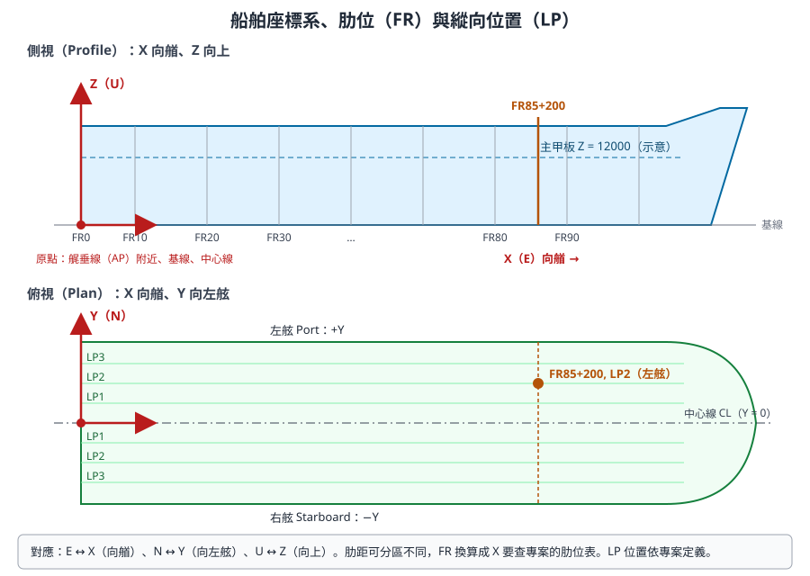
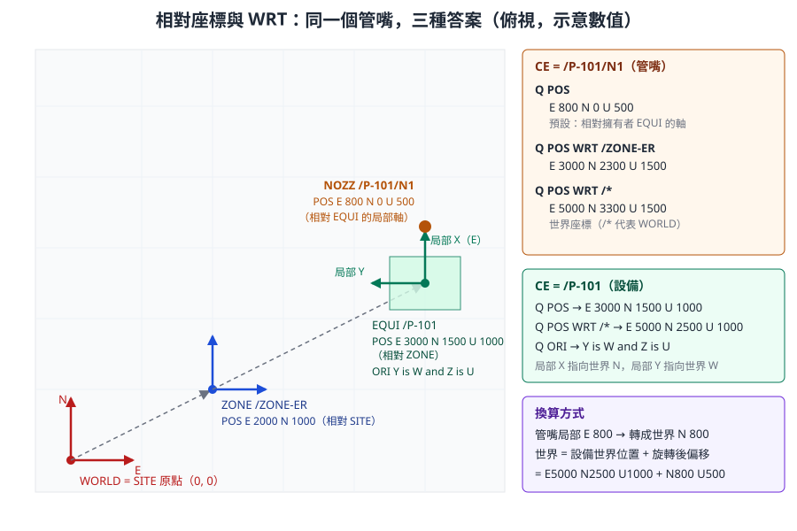

第 4 章 座標、方向與幾何
本章說明 AVEVA Marine 如何表示「在哪裡」與「朝哪個方向」。舾裝承襲 PDMS，用東、北、上（E／N／U）描述位置；船體承襲 Tribon，用 X／Y／Z 與肋位、縱向位置描述位置。兩者在同一個專案中共存，開發人員必須能互相換算，並理解「位置預設是相對於擁有者」這個最容易出錯的規則。
內容依據 AVEVA Hull and Outfitting 12.1 線上文件（船舶座標系與 FR／LP 定位）、AVEVA E3D 2.1 Software Customisation Reference Manual（位置表示式、WRT、PLANE 物件）、Database Management Reference Manual，以及開放取用論文中的實際 PML 程式自主撰寫。不同版本的語法細節可能不同，標示 〔待核對〕 者請在公司訓練專案中驗證。
4.1 學習目標
讀完本章，你應該能夠：
- 說明世界座標 E／N／U 與船舶座標 X／Y／Z 的對應，以及船舶座標原點的慣例位置。
- 讀懂並寫出
E 1000 N 2000 U 300這類位置、N 45 E這類方向、Y is N and Z is U這類姿態。 - 解釋「位置預設相對於擁有者」，並用
WRT在不同座標系間轉換。 - 用肋位（FR）與縱向位置（LP）描述船體位置，並說明為什麼船體建模偏好參考而不是數值。
- 說明左右舷的符號慣例與對稱建模時的注意事項。
- 認識 PML 的 POSITION、DIRECTION、ORIENTATION、LINE、PLANE 物件。
- 知道長度、角度單位在哪裡設定，以及工具輸出時要注意什麼。
4.2 兩套座標語言
4.2.1 船舶座標系
AVEVA Hull and Outfitting 文件描述的船舶座標系慣例是：
- 原點通常位於船艉、低處、中心線上，例如艉垂線（AP）與基線的交點。把原點放在船艉，可以讓 X 座標都是正值。
- X 軸指向船艏。
- Y 軸指向左舷（Portside）。
- Z 軸向上。Z 座標可以是負值（例如基線以下的構件）。

圖 4-1 船舶座標系、肋位與縱向位置。上為側視，下為俯視。FR 沿 X 方向編號，LP 是平行於中心線的縱向位置。數值為示意。（本課程自繪，依 AVEVA Hull and Outfitting 文件的座標系說明）
4.2.2 舾裝的世界座標
PDMS 系的舾裝模組沿用工廠設計的習慣，以地理方向描述位置：
| 舾裝（PDMS 系） | 船舶（Tribon 系） | 船上意義 | 反方向 |
|---|---|---|---|
| E（East，東） | X | 向艏 | W（West）、−X，向艉 |
| N（North，北） | Y | 向左舷 | S（South）、−Y，向右舷 |
| U（Up，上） | Z | 向上 | D（Down）、−Z，向下 |
兩套都是右手座標系，對應關係是 E = X、N = Y、U = Z。所以「東」在船上就是「船艏方向」，「北」就是「左舷方向」。
專業提醒： 這個對應是 Marine 專案的常見設定，但它取決於專案初始化時船體座標系如何對應到舾裝世界座標〔請向管理員確認公司專案的設定〕。在官方型錄的畫面中，可以同時看到兩種寫法：設備定位手把顯示
X 35 -Y，閥門方向手把顯示E 45 U。介面顯示哪一種，可能與模組和設定有關〔待核對〕。
圖片內容：設備定位：3D 操控手把顯示方向 X 35 -Y
圖 4-2 以 3D 操控手把定位設備，畫面即時顯示方向 X 35 -Y，意思是「從 +X 往 −Y 轉 35 度」。（來源：AVEVA Hull and Outfitting Datasheet）
圖片內容：閥門方向調整：圓形操控手把顯示 E 45 U
圖 4-3 以圓形操控手把旋轉閥門手輪，顯示方向 E 45 U，意思是「從 E 往 U 轉 45 度」。（來源：AVEVA Hull and Outfitting Datasheet）
4.3 位置、方向與姿態
4.3.1 三種幾何量
| 量 | 意義 | 寫法範例 | 屬性 | 數學對照 |
|---|---|---|---|---|
| 位置（Position） | 空間中的一個點 | E 1000 N 2000 U 300 |
POS |
3D 點 |
| 方向（Direction） | 一個指向，不含位置 | N、N 45 E、E 45 U、-X |
管嘴方向、連接點方向等 | 單位向量 |
| 姿態（Orientation） | 物件局部座標軸的整體朝向 | Y is N and Z is U |
ORI |
旋轉矩陣 |
E3D 2.1 DBRM 說明，Position、Direction、Orientation 都是由三個實數組成的特殊屬性型別。
4.3.2 位置的寫法
位置由三個分量組成，每個分量是「方向字母 + 數值」：
E 1000 N 2000 U 300
W 500 S 1200 D 100
E 1000mm N 2000mm U 300mm
- 負方向可以用反向字母（
W、S、D）表示。 - 數值可以帶單位〔可接受的單位寫法依版本待核對〕。
- 省略的分量視為 0〔待核對〕。
E3D 2.1 SCRM 列出更多位置表示式，常用的有：
| 寫法 | 意義 |
|---|---|
POS OF /VESS1 WRT /* |
某元素的位置屬性，以世界座標表示 |
P1 POS OF /CYL2 |
某元素第 1 個連接點（P-point）的位置 |
N 45 W 20000 U 1000 |
直接寫出的卡氏座標位置 |
N 1000 FROM /ATEST |
從某元素往北 1000 的位置 |
N 1000 FROM P1 OF /BOX2 |
從某元素的連接點出發的偏移 |
N (DESP[1] + 10) E |
數值部分可以是運算式 |
4.3.3 方向的寫法
方向表示「從一個軸往另一個軸轉一個角度」：
| 寫法 | 意義 |
|---|---|
N |
正北（船上：指向左舷） |
-X 或 W |
指向船艉 |
N 45 E |
從 N 往 E 轉 45 度，也就是東北 |
E 45 U |
從 E 往 U 仰起 45 度 |
X 35 -Y |
從 +X 往 −Y 轉 35 度（船上：從艏向往右舷偏 35 度） |
4.3.4 姿態的寫法
姿態用「局部軸指向哪個世界方向」描述，通常指定兩個軸，第三個軸由右手定則決定：
ORI Y is N and Z is U
ORI Y is W and Z is U
ORI X is N and Z is U
Y is N and Z is U是預設姿態：局部軸與擁有者的軸一致。Y is W and Z is U表示繞垂直軸轉了 90 度：局部 Y 指向 W，局部 Z 仍向上，依右手定則局部 X 指向 N。- 姿態也可以帶角度的方向，例如
Y is N 30 E and Z is U〔語法細節待核對〕。
開發人員須知： 姿態本質上是旋轉矩陣。程式中如果需要做座標換算，不要自己解析
Y is W and Z is U字串再寫三角函數，應該使用 PML 的 ORIENTATION、POSITION 物件方法，或用WRT讓系統換算（4.4 節、4.7 節）。
4.3.5 設定位置與姿態的命令
以下命令會修改資料，只能在訓練專案中練習：
-- 示意：設定 CE 的位置與姿態（僅限訓練專案）
/TRAIN-EQUI-01
POS E 1000 N 2000 U 300
ORI Y is N and Z is U
Q POS
Q ORI
PDMS 系還有相對移動的命令，例如 BY E 100（往東移 100）〔Marine 中的可用性待核對〕。
4.4 相對座標與 WRT
4.4.1 規則：位置預設相對於擁有者
這是本章最重要的觀念。E3D 2.1 SCRM 說明：預設情況下，卡氏座標是以擁有元素的座標系表示；Q POS 回傳 CE 相對於其擁有者的位置；要取得世界座標，使用 Q POS WRT /*。
換句話說，POS 屬性儲存的是「在擁有者座標系中的位置」，就像 HTML 中 position: relative 的元素，或遊戲引擎中物件的 local transform。要知道絕對位置，必須沿著擁有者鏈一路累加平移與旋轉。

圖 4-4 同一個管嘴在三種座標系下的位置。設備 /P-101 繞垂直軸轉了 90 度，所以管嘴的局部 E 800 在世界座標中變成 N 800。（本課程自繪，數值為示意）
4.4.2 換算步驟
以圖 4-4 為例，管嘴的世界座標是這樣算出來的：
| 步驟 | 元素 | 在擁有者座標系中的 POS | 擁有者的世界位置 | 擁有者姿態 | 本元素的世界位置 |
|---|---|---|---|---|---|
| 1 | ZONE /ZONE-ER |
E 2000 N 1000 U 0 | SITE 在原點 | 預設 | E 2000 N 1000 U 0 |
| 2 | EQUI /P-101 |
E 3000 N 1500 U 1000 | E 2000 N 1000 U 0 | 預設 | E 5000 N 2500 U 1000 |
| 3 | NOZZ /P-101/N1 |
E 800 N 0 U 500 | E 5000 N 2500 U 1000 | Y is W and Z is U（局部 E 指向世界 N） |
E 5000 N 3300 U 1500 |
第 3 步的關鍵是：管嘴的局部 E 800 要先用設備的姿態旋轉，變成世界方向的 N 800，再加上設備的世界位置。
4.4.3 WRT 的用法
WRT（With Respect To）指定「以哪個元素的座標系表示」：
Q POS
Q POS WRT /*
Q POS WRT /ZONE-ER
Q POS OF /P-101/N1 WRT /*
Q PPOS(1) WRT /MYBRAN
| 寫法 | 結果 |
|---|---|
Q POS |
相對於擁有者 |
Q POS WRT /* |
世界座標（/* 代表 WORLD） |
Q POS WRT /ZONE-ER |
以指定元素的座標系表示 |
Q PPOS(1) WRT /MYBRAN |
第 1 個連接點相對於某分支（E3D 2.1 DBRM 範例） |
WRT 也可以接在卡氏座標後面，把「相對於某元素」的位置變成絕對位置。SCRM 的例子是 N 100 WRT /BOX1：表示在 /BOX1 的座標系中往北 100 的那個點。SCRM 也提到 WRT 可以再加上 FROM 限定，以及 CONSTRUCT 語法預設使用世界座標。
開發人員須知： 工具輸出座標時，一定要說明是哪個座標系。報表欄位寫「POS」是不夠的，應寫成「世界座標 X（mm）」或「相對 ZONE」。比對兩個元素的距離、做干涉判斷時，兩個位置必須在同一個座標系，最簡單的做法是全部換成世界座標。
4.4.4 為什麼要相對座標
相對座標看起來麻煩，但它讓「移動整組物件」變得簡單：移動一台設備，只要改設備的 POS，它底下的所有基本體與管嘴自動跟著移動，因為它們的位置是相對於設備的。這和 CAD 的區塊（Block）或 3D 引擎的場景圖（Scene Graph）是同一個設計。
4.5 船體定位系統：肋位與縱向位置
4.5.1 為什麼船體不用絕對座標
船體設計很少直接寫「X = 64250」，而是寫「FR85 + 200」。理由是：
- 與船的結構對齊。 肋骨、橫艙壁都位在肋位上，用肋位描述最自然。
- 變更可傳遞。 如果肋距表調整，以肋位描述的構件會跟著重算。
- 溝通方便。 現場、圖面、船級審查都用肋位溝通。
4.5.2 肋位（FR）
AVEVA Hull and Outfitting 文件說明的重點：
- FR 只能用來定義 X 方向（船長方向）的位置。
- 位置可以寫成相對於某個肋位的偏移，正值表示往船艏。
- 可以一次指定一組等間隔的肋位，文件中的例子是
FR123(5)133 + 500，表示「肋位 123、128、133 各往艏 500 mm」。
常見寫法：
| 寫法 | 意義 |
|---|---|
FR85 |
肋位 85 |
FR85+200 |
肋位 85 往艏 200 mm |
FR85-300 |
肋位 85 往艉 300 mm |
FR123(5)133 + 500 |
肋位 123、128、133 各往艏 500 mm |
肋位與 X 座標的換算由專案的肋位表決定。肋距不一定固定，常見做法是艉部、中段、艏部採用不同肋距，例如（示意）：
| 區段 | 肋距 | FR 與 X 的換算（示意） |
|---|---|---|
| FR0 至 FR20 | 700 mm | X = FR × 700 |
| FR20 至 FR180 | 800 mm | X = 14000 + (FR − 20) × 800 |
| FR180 以後 | 650 mm | X = 142000 + (FR − 180) × 650 |
依上表，FR85+200 的 X = 14000 + 65 × 800 + 200 = 66200 mm。實際數值必須查公司專案的肋位表。
4.5.3 縱向位置（LP）
LP（Longitudinal Position）描述的是縱向構件（縱骨、縱桁）的位置。AVEVA 文件說明，LP 可以定義 Y 方向的位置（例如船底縱骨的編號），也可以定義 Z 方向的位置（例如舷側縱骨的編號）。也就是說，LP 的意義取決於它用在哪個方向：
| 用途 | LP 代表 | 例子（示意） |
|---|---|---|
| 船底、甲板縱骨 | 距中心線的 Y 位置 | LP4 = 從中心線算起第 4 條縱骨的位置 |
| 舷側縱骨 | Z 方向的高度位置 | LP3 = 舷側第 3 條縱骨的高度 |
LP 也可以加偏移，例如 LP4+50〔寫法依版本待核對〕。
4.5.4 甲板高度與平面
Z 方向除了 LP，也常以甲板、平台或基線高度表示，例如「主甲板」「二甲板 + 300」。這些高度可能以命名的參考面（Reference Surface Object，RSO）或座標平面定義，由初始設計階段建立〔寫法依公司專案設定待核對〕。
專業提醒： 肋位表、LP 定義、甲板高度在專案初始化時由管理員設定，修改它們會影響整船的船體模型。開發人員的工具應讀取這些定義來換算，而不是在程式中寫死肋距。
圖片內容：船殼曲面上的肋位線與外板接縫
圖 4-5 船殼曲面上的肋位線與外板接縫。肋位線就是 FR 在曲面上的軌跡。（來源：AVEVA Hull and Outfitting Datasheet）
4.5.5 板架的局部座標
船體平面板架有自己的局部座標系：板架所在的型面（Mould Plane）是局部的 UV 平面。這是「相對座標」觀念在船體上的延伸：板架內的構件以型面座標描述，型面本身再以 FR、LP 或甲板高度定位。第 5 章會詳細說明。
4.6 左右舷與對稱
4.6.1 符號慣例
依船舶座標系，Y 軸指向左舷：
| 位置 | Y 的符號 | 常見標記 |
|---|---|---|
| 左舷（Port） | Y > 0 | P、PS |
| 中心線上 | Y = 0 | C、CL |
| 右舷（Starboard） | Y < 0 | S、SB |
4.6.2 對稱建模
船體結構大多左右對稱。常見做法是只建一舷，或以對稱的定義同時涵蓋兩舷；命名上常以後綴區分，例如無後綴代表對稱、P 代表左舷、S 代表右舷〔確切規則以公司命名規範為準〕。
開發人員要注意：
- 鏡射不只是 Y 變號。 位置的鏡射是 Y → −Y，但方向與姿態的鏡射會改變左右手性。型材的腹板方向、肘板的朝向，鏡射後不一定能用「轉一下」得到。
- 對稱定義的元素可能只有一筆資料。 統計數量、重量時，要知道一筆資料是代表一舷還是兩舷〔對稱元素的屬性表示方式待核對〕。
- 報表要標示舷別。 只給座標的報表，讀者容易看錯左右。
4.7 PML 的幾何物件
PML2 提供一組幾何物件，讓程式不必自己寫向量運算。以下整理本課程有依據的成員與方法；未在官方頁面或實際程式中看到的部分標示〔待核對〕。
| 物件 | 代表 | 有依據的成員與方法 | 依據 |
|---|---|---|---|
POSITION |
點 | .east、.north、.up 分量；.Line(POSITION) 建立兩點之間的直線 |
論文實際 PML、開源 pml-json |
DIRECTION |
單位向量 | 由方向字串建立，例如 N 45 E〔建構方式待核對〕 |
一般用法 |
ORIENTATION |
姿態 | PLANE 的 Orientation 成員型別 |
E3D 2.1 SCRM |
LINE |
直線或線段 | .OnProjected(POSITION) 判斷投影是否落在線段上；.Near(POSITION) 取最近點 |
論文實際 PML |
PLANE |
平面 | Position、Orientation 成員；Plane(POSITION, ORIENTATION)；Direction()；Intersection(LINE)；Intersection(PLANE)；Near(POSITION)；XYOffset(POSITION) |
E3D 2.1 SCRM PLANE Object |
4.7.1 讀取位置分量
從資料庫取得的 POS 是 POSITION 物件，可以直接取分量：
-- 示意：讀取設備的世界座標分量
!pump = object DBREF('/P-101')
!world = object DBREF('/*')
!wpos = !pump.pos.wrt(!world)
!x = !wpos.east
!y = !wpos.north
!z = !wpos.up
$P X=$!x Y=$!y Z=$!z
〔.wrt() 方法名稱與參數寫法待核對；若不可用，可改用 PML1 表示式 var !wpos (POS WRT /* ) 之類的寫法，語法同樣請在訓練專案驗證。〕
4.7.2 真實程式中的幾何物件
第 18 章的外板開孔論文附有實際執行的 PML 截圖，其中一段示範了 POSITION 與 LINE 的用法：

圖 4-6 實際 PML：!pos1.Line(!pos2) 由兩個 POSITION 建立 LINE；!line.OnProjected(!basepos) 判斷開孔中心的投影是否落在線段上；!line.Near(!basePos) 取線段上最近的點；AID LINE、AID SPHERE 在 3D 視圖畫輔助圖形以目視除錯。（來源：Kim, Park & Yang, 2020, JAMET 44(3), Figure 11，CC BY-NC 3.0）
用自己的話改寫這段邏輯（示意）：
-- 示意：在一串交點中，找出包夾目標點的線段，並取得線上最近點
-- !pts 為 POSITION 陣列，!target 為 POSITION
do !i from 1 to !pts.size() - 1
!seg = !pts[!i].Line(!pts[!i + 1])
if (!seg.OnProjected(!target)) then
!nearest = !seg.Near(!target)
break
endif
enddo
4.7.3 平面運算
E3D 2.1 SCRM 的 PLANE 物件提供常見的平面運算，例如：
| 方法 | 回傳 | 用途 |
|---|---|---|
Plane(POSITION, ORIENTATION) |
PLANE | 由原點與姿態定義平面 |
Direction() |
DIRECTION | 平面的法向（Z 方向） |
Intersection(LINE) |
POSITION | 無限直線與平面的交點 |
Intersection(PLANE) |
LINE | 兩平面的交線 |
Intersection(PLANE, PLANE) |
POSITION | 三平面的交點 |
Near(POSITION) |
POSITION | 平面上離指定點最近的點 |
XYOffset(POSITION) |
XYPOSITION | 把點換成平面上的 XY 偏移 |
這些方法很適合用在「某點投影到甲板面」「管線與艙壁的交點」這類船上常見的計算。Marine 版本中的可用方法請以公司版本的 Software Customisation Reference Manual 核對〔待核對〕。
4.8 單位
| 項目 | 常見預設 | 說明 |
|---|---|---|
| 船體長度 | mm | 官方文件指出，Hull 與 Marine Drafting 的單位設定在 12.0、12.1 與 Tribon M3 之間保持一致 |
| 舾裝長度 | mm（可設定為英制） | PDMS 系可分別設定距離（distance）與口徑（bore）的單位〔命令與介面待核對〕 |
| 管徑（Bore） | mm 或 inch | 口徑單位可能與距離單位不同，例如距離用 mm、口徑用 inch |
| 角度 | 度（degree） | 方向與姿態中的角度 |
| 圖面 | 依圖面設定 | 比例與標註單位在圖面中另行設定（第 9 章） |
開發人員須知： 從
Q的輸出取值時，字串會帶單位（例如2100mm），不要用字串切割去解析。程式中應直接取屬性值，並在報表標題寫明單位。與外部系統交換資料時（第 16 章），在檔案中明確記錄單位與座標系，避免對方誤以為是公尺或英吋。
4.9 開發人員須知
- POS 是相對位置。 需要絕對位置，就用
WRT /*；比較兩個元素的位置，先轉到同一座標系。 - E／N／U 與 X／Y／Z 是同一件事的兩種說法。 在 Marine 專案中通常 E = X（艏）、N = Y（左舷）、U = Z（上），但仍以專案設定為準。
- 不要寫死肋距。 FR 與 X 的換算要讀專案的定義。工具輸出時，同時提供 FR 寫法與 X 座標，對船體人員最友善。
- 注意左右舷符號。 Y > 0 是左舷。報表加上舷別欄位。
- 使用系統的幾何物件。 POSITION、LINE、PLANE 的方法比自己寫三角函數可靠。
- 用 AID 圖形除錯幾何。 論文作者在 3D 視圖畫輔助球與輔助線檢查計算結果，這是幾何程式最有效的除錯方法（第 17 章）。
4.10 練習
查詢類練習在任何專案都安全；練習 4 會修改資料，只能在訓練專案進行。
練習 1：同一個點，三種座標
選一個管嘴，查詢：
Q POS
Q POS WRT /*
Q POS WRT <它所屬的 ZONE 名稱>
再到它所屬的設備，查詢 Q POS、Q ORI、Q POS WRT /*。用 4.4.2 的表格方法，手算管嘴的世界座標，與系統的結果比對。
練習 2：把世界座標換成 FR
取得公司專案的肋位表。把練習 1 得到的世界 X 座標換算成「FRnn ± 偏移」的寫法，請船體同事確認是否正確。
練習 3：舷別判讀
在訓練專案中找三個元素：一個在左舷、一個在右舷、一個在中心線上。查詢它們的世界 Y 座標，驗證 Y 的正負號與舷別的對應。
練習 4：觀察相對座標（僅限訓練專案）
- 建立或選擇一台訓練設備，記錄它的一個管嘴的
Q POS與Q POS WRT /*。 - 把設備的
ORI改成Y is W and Z is U。 - 再查一次管嘴的兩個位置。說明為什麼
Q POS沒變，Q POS WRT /*變了。 - 把設備的姿態改回原值。
練習 5：讀懂實際程式
閱讀圖 4-6 的程式，回答：!templist 中的元素是什麼型別？OnProjected 回傳什麼型別？為什麼作者要用 AID SPHERE 畫出每個交點？
4.11 自我檢核
- [ ] 我能說出船舶座標系的原點慣例與 X、Y、Z 的方向。
- [ ] 我知道 E／N／U 與 X／Y／Z 的對應，以及要向誰確認公司專案的設定。
- [ ] 我能讀寫位置
E 1000 N 2000 U 300、方向N 45 E、姿態Y is N and Z is U。 - [ ] 我能解釋「POS 預設相對於擁有者」，並用
Q POS WRT /*取得世界座標。 - [ ] 我能手算一個簡單例子中，經過旋轉的子元素的世界座標。
- [ ] 我能解釋
FR85+200、FR123(5)133 + 500的意義，並用肋位表換算 X。 - [ ] 我知道 LP 可以代表 Y 方向或 Z 方向的縱向位置。
- [ ] 我知道 Y > 0 是左舷，並了解鏡射時方向與姿態的注意事項。
- [ ] 我認識 POSITION、DIRECTION、ORIENTATION、LINE、PLANE，並知道 PLANE 有哪些常用方法。
- [ ] 我知道工具輸出座標時要標明座標系與單位。
延伸閱讀： 上一章第 3 章 資料階層、元素、屬性與導覽；船體型面與拓撲參考見第 5 章；外板開孔的完整幾何案例見第 18 章；術語見附錄 B。
4.12 資料來源
- AVEVA Hull and Outfitting 12.1 線上文件：船舶座標系、原點與軸向（需以瀏覽器開啟）：https://docs.aveva.com/bundle/hull-and-outfitting/page/1110625.html
- AVEVA Hull and Outfitting 12.1 線上文件：FR 與 LP 定位語法：https://docs.aveva.com/bundle/hull-and-outfitting/page/1115619.html、https://docs.aveva.com/bundle/hull-and-outfitting/page/1112589.html
- AVEVA E3D 2.1 SCRM：Positions（位置表示式）：https://help.aveva.com/AVEVA_Everything3D/2.1/SCRM/SCRM6.5.17.html
- AVEVA E3D 2.1 SCRM：WRT（相對與絕對座標、
Q POS WRT /*、N 100 WRT /BOX1）：https://help.aveva.com/AVEVA_Everything3D/2.1/SCRM/SCRM6.5.18.html - AVEVA E3D 2.1 SCRM：PLANE Object：https://help.aveva.com/AVEVA_Everything3D/2.1/SCRM/SCRM3.3.59.html
- AVEVA E3D 2.1 DBRM：Attributes（Position、Direction、Orientation 型別）：https://help.aveva.com/AVEVA_Everything3D/2.1/DBRM/DBRM3.04.01.html
- AVEVA E3D 2.1 DBRM：Relative Positions, Directions, Orientations：https://help.aveva.com/AVEVA_Everything3D/2.1/DBRM/DBRM3.04.14.html
- Kim, Park & Yang (2020), Journal of Advanced Marine Engineering and Technology 44(3)，CC BY-NC 開放取用（圖 4-6 來源）：https://doi.org/10.5916/jamet.2020.44.3.196
- k-awata/pml-json（開源，POSITION 物件的 east、north、up 成員用例）：https://github.com/k-awata/pml-json
- AVEVA Hull and Outfitting Datasheet（圖 4-2、4-3、4-5 來源）：https://www.aveva.com/content/dam/aveva/documents/perspectives/datasheets/Datasheet_HullandOutfitting.pdf.coredownload.inline.pdf